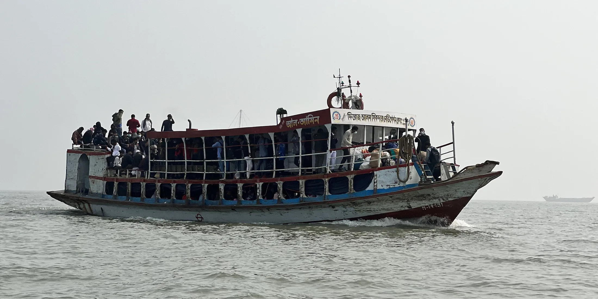

These are the routes local operators actually run, written out day by day so you can copy them, cut them in half, or hand them to an agent.
Nothing here needs a private jet or a fixer. The longest single transfer is an overnight boat, and that is the point of it.
The classic river route, run in the order the water runs. You spend four of the ten nights on a boat.
Old Dhaka on foot: Ahsan Manzil, Star Mosque, Shakhari Bazar, then Sadarghat at six in the evening when the launches leave together.
Overnight paddle steamer south. Take first class, eat in the galley, sit on the front deck after dark.
Guava market at Bhimruli by country boat, canal villages, and the floating markets that only run in the monsoon.
Sunrise and sunset on the same beach, Rakhine villages, and a day trip to Fatra Char forest.
Three nights on a forest boat into Kotka and Hiron Point with a forest department guide, out through Bagerhat.
A short, focused wildlife trip. Everything except the first and last night is spent on the water.
Arrive, meet the boat, permits and briefing. Fish market in the afternoon.
Karamjal, Harbaria, Kotka, Jamtola beach and Hiron Point. Dawn and dusk on small tenders up the narrow creeks.
Out of the forest and straight into the fifteenth century: Shait Gumbad Mosque, Khan Jahan's tomb, Nine Dome Mosque.
Morning drive or flight from Jashore.
The hill country, taken slowly. Some sections need permits and a registered local guide, arranged in advance.
Port city, Chandanpura Mosque, and the hill of Foy's Lake in the evening.
Kaptai Lake by boat all day, hanging bridge, Chakma royal palace, tribal textile market.
Nilgiri and Chimbuk ridge, Boga Lake, Rijuk falls, and a night in a hill village.
River boat upstream, then the walk in to Nafakhum falls and back.
Green and wet. Best from July to September for the swamp, or December to February for the birds.
Tea gardens at first light, Lawachara for gibbons, seven layer tea at midday, pineapple and lemon farms.
Rowing boat through the swamp forest early, then Bisnakandi or Jaflong in the afternoon.
Two nights on a houseboat out of Tahirpur. Watchtower at dawn, Niladri lake, back through Sunamganj.
Buddhist, Hindu, Mughal and colonial, in roughly the order they happened.
Mahasthangarh citadel and museum, Gokul Medh, and the Behular Bashor Ghar mound.
Somapura Mahavihara at dawn, then the Kusumba Mosque and the Jain temples at Naogaon.
Kantajew Temple and its fifteen thousand terracotta plaques, Ramsagar tank, Nayabad Mosque.
The temple cluster at Puthia, Bagha Mosque, and mangoes if it is May or June.
Panam City, the folk art museum, then Lalbagh Fort and Armenian Church in Dhaka.